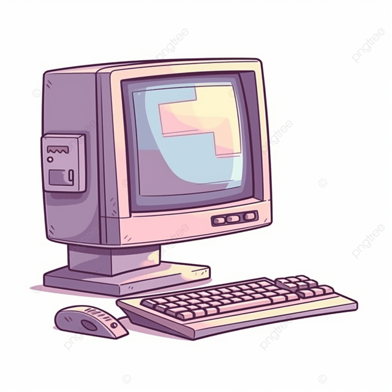

Bienvenido a nuestro Centro de Asistencia

Brindamos atención técnica especializada en equipos de escritorio, portátiles (laptops) y All-in-One. Nos enfocamos en mantener tu equipo funcionando de manera rápida, segura y sin interrupciones.
Nuestra Garantía de Servicio
- Diagnóstico sin costo: Si realizas la reparación con nosotros, la revisión inicial es completamente gratuita.
- Refacciones originales: Trabajamos con piezas y componentes garantizados por los fabricantes.
- Confidencialidad: Respaldamos tus archivos personales y documentos de trabajo antes de cada mantenimiento.
- Garantía por escrito: Todos nuestros trabajos incluyen 30 días de garantía.
Pasos para Solicitar Tu Servicio
- Ingresa a la sección Solicitar Soporte y llena el formulario con las fallas que detectas.
- Recibe una estimación inicial y trae tu equipo a nuestra sucursal.
- Realizamos las pruebas de diagnóstico y te notificamos el presupuesto final.
- Aceptas el trabajo, repararemos tu equipo y te lo entregamos listo para usar.
- (Horarios: Lunes a Viernes de 9:00 AM a 6:00 PM.)
Preguntas Frecuentes (FAQ)
¿Cuánto tarda una reparación? La mayoría de los servicios de mantenimiento se entregan en menos de 24 horas.
¿Atienden marcas específicas? Reparamos marcas como HP, Dell, Lenovo, Asus, Acer, Apple (MacBook e iMac) y equipos ensamblados.
¿Qué hago antes de entregar mi equipo? Te sugerimos enviarnos el equipo con su cargador (en caso de laptop) y retirar contraseñas personales o compartirlas temporalmente al técnico.